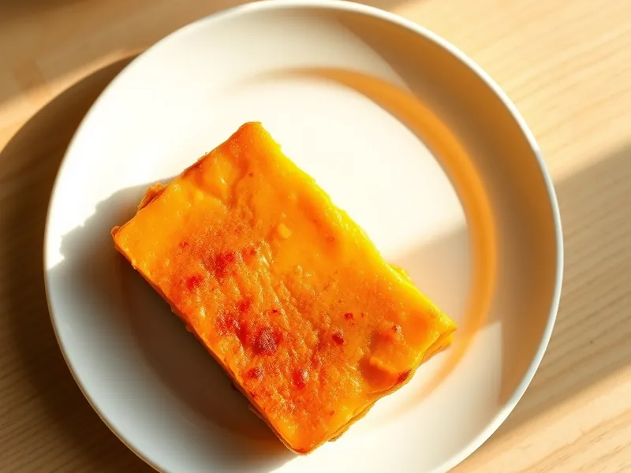

Творожная запеканка с тыквой
Оранжевая творожная запеканка с тёртой тыквой и манкой в духовке
75 мин6 порц.263 ккал на порциюБ 18 · Ж 9 · У 26Русская кухня
Открыть в приложении: порции, таймеры, список покупок
Продукты на 6 порц.
- Творог 5%500 г
- Тыква300 г
- Яйцо куриное2 шт
- Манная крупа4 ст. л.
- Сахар4 ст. л.
- Сметана 20%2 ст. л.
- Ванильный сахар1 шт
- Сливочное масло10 г
- Соль1 щеп.
Как готовить
- Очистите тыкву и натрите на мелкой тёрке, слегка отожмите сок руками.
- Разомните творог вилкой, добавьте яйца, сахар, ванильный сахар, соль и сметану, перемешайте до однородности 2 минуты.
- Вмешайте манку и тыкву и оставьте на 15 минут, чтобы манка набухла.
- Разогрейте духовку до 180 °C (средний жар) и смажьте форму сливочным маслом.
- Выложите массу в форму, разровняйте и запекайте 40-45 минут при 180 °C (средний жар), пока верх не станет золотистым, а края не отстанут от формы.
- Остудите в форме 15 минут: горячая запеканка мягкая и при резке ломается.
Совет. Отжимайте тыкву обязательно, иначе запеканка выйдет сырой в середине. Подавайте со сметаной или мёдом.